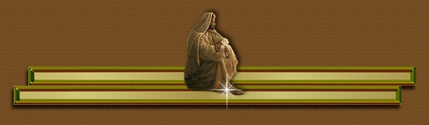

God's Choice
Have you ever reached a point in your life when you know you can't
carry on?
By this I mean not want to carry on living! I have but God said
to me, "No."
This has happened to me a twice in my life and both times God
stepped in.
I remember we used to take a short cut to in order to get home
from Carmarthen.
Along the road, there was a steep drop-off to the left.
Once, after suffering physical and mental abuse and also having
all my money stolen
by a trusted friend, I began to think, "I've had it, I just can't
take anymore; living is
just not worth it. "
I drove my car to that road with the steep cliff and placed it
right on the brink,
knowing all I had to do was let the handbrake off. I'd even left
a note for my girls,
asking them to forgive me.
As I sat there I prayed, and as I was about to make the final
move for the brake God
spoke to me: me -- the person who was running out on him. There
I was telling God that
I couldn't do this anymore and He was telling me, "You are my
child, I have work for you
to do". I could not believe what I was hearing. "There must be
some mistake," I thought.
I was unworthy of God's Love. How could I help God when I was
in no fit state to help
myself?
In the end I drove the car back home (how I did it, to this day
I do not know). My girls
hadn't found my note and I thanked God for that. I realized
then that running away
would not solve anything. But I still wondered what God wanted
me to do.
The answer came as He began to use me through testimony to reach
others suffering
abuse. He taught me to council them. This was not me;
I was not capable of this. This
was definitely God at work in their lives through me.
My main objective was to teach
others about forgiveness and that they were of value in
His eyes. I know that no matter
how much I had to suffer in life, it wasn't half as much as God
suffered for me.
The second event was more recent. After again suffering
physical abuse, I sat in my
room with a bottle of tablets in my hand. Again, God told
me, "No! I still have work
for you to do."
No one said that being a Christian was an easy option. It doesn't
give us an easy ride.
We still have to continue with our daily lives but it does give
us something special.
It gives us the love of a wonderful Father. It gives us the knowledge
that if we pour out
all our cares on Him, just as He asks us to, He will carry us
through.
I have recently had to make big decisions in my life but I have
done them in the
knowledge that I have talked them over with God. I know that
whatever happens I am
in His hands. All I have to do is trust Him and take Him at His
word. He will see
me through.
When I think of all the young people today suffering in some way,
those who have died
through drug abuse, others believing that no one cares for them,
I long to reach out my
hand to them and tell them God cares. God is using me in His
way.
I help out at an addiction center when needed and they only
have to pick up the
phone and I am there, with God's help. I have also done some
work with the Samaritans.
Believe me, God gives me the strength to do this. Through my
personal experience and
His love, He guides me daily.
Now I say, "Thank You God. Thank you for loving me enough to want
to use me as
you see fit." I will never again feel unworthy, because I know,
I face each day with
the power of God in my life.
And we pray this in order that you may live a life worthy of the
Lord and may please Him
in every way. Bearing fruit in every good work, growing in the
knowledge of God, being strengthened with all Power, according to His glorious
might. Colossians (I: 10-11)
© Gwen Hopkins
1st May, 1999
Song is "Bridge Over Troubled Water"
Availabke from: Daily
Reflections Holiday Midis
Song is Everything I do, I do It for You Artist:Bryan Adams,
for entertainment only, not for sale or reproduction